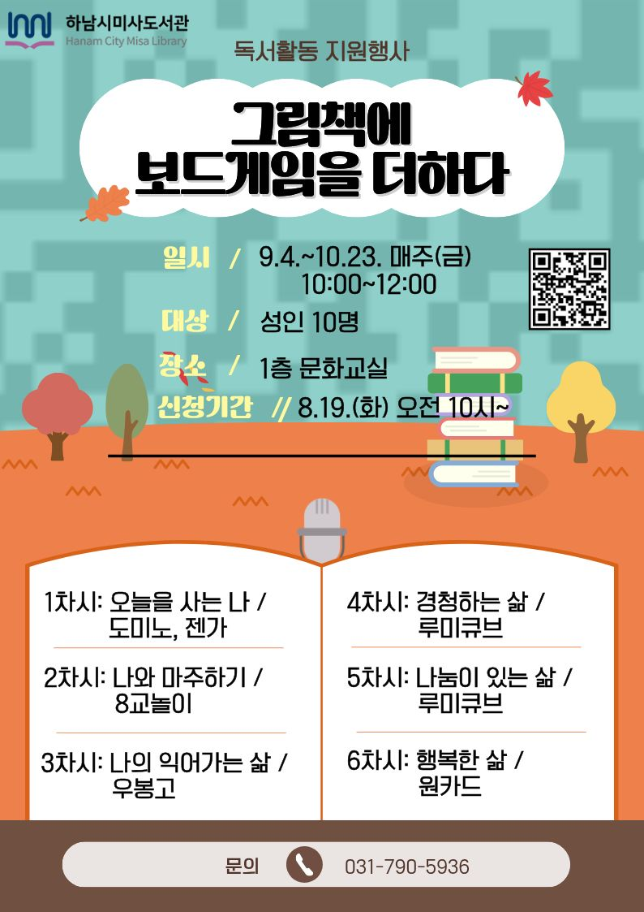
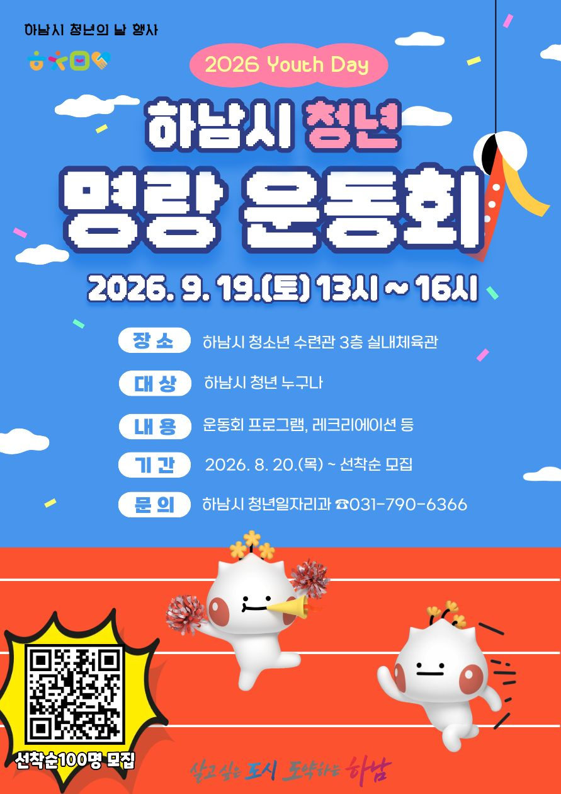

38호 | 2026년 9월 11일 발행
📌 이번 호 주요 목차
 우리동네 국회의원 이광재
우리동네 국회의원 이광재
📰 언론보도
[의정/예산] 추미애 지사, 이광재 국회 예결위원장 만나 2천446억 국비 지원 요청
경기도가 국회 예산결산특별위원회 이광재 위원장을 찾아 교산 신도시 AI 클러스터 조성, 지분형 주택 확대, 주요 교통망 구축 등 하남시 핵심 현안 해결과 내년도 10개 사업 총 2,446억 원 규모의 국비 확보를 위한 차질 없는 국회 협력을 요청했습니다.
📌 출처: 연합뉴스 (최찬흥 기자)
📰 언론보도
[인터뷰] 이광재 예결위원장 "국가예산, AI 미래투자·복지 안전망 균형있게 확보할 것"
더불어민주당 이광재 국회의원(예산결산특별위원장, 경기 하남갑)이 인터뷰를 통해 하남시 AI 바이오 클러스터 자족도시 도약 추진과 교산 3·9호선 연장 및 위례 교통대책 등 미래 성장동력 투자를 위한 국가 예산 확보 구상과 의정 방향을 상세히 밝혔습니다.
📌 출처: 디지털타임스 (강현철 기획제작부장)
📝 현장일지
[대정부질문] "호르무즈에서 북극항로까지, 대한민국의 신질서 국가전략은?"
오늘 외교·통일·안보 분야 대정부질문 발언을 통해 호르무즈 해협 안보부터 북극항로 개척까지 대한민국의 신질서 국가전략과 미래 해양·에너지 안보 대응 방안을 제시하고 정부의 과감한 추진을 촉구했습니다.
📌 출처: 이광재 공식 네이버 블로그
📰 하남 지역 주요 뉴스
📰 재정/기획
경기도 긴축재정에 하남시 예산도 '노란불'…2027년 예산 효율성 확보 비상
경기도의 긴축재정 기조 본격화로 하남시의 2027년 예산 편성에도 경고등이 켜진 가운데, 세입 불확실성과 경직성 지출 증가에 대응해 한정된 재원의 효율적 배분 및 사업 우선순위 재조정 방안이 긴급 과제로 떠올랐습니다.
📌 출처: 뉴스프리존 (김정수 기자)
📰 의정/안전
정병용 하남시의회 의장, 공유킥보드 안전대책 간담회… "무단방치 견인 단속 강화"
정병용 하남시의회 의장이 관계자 간담회를 열고 공유킥보드 무단방치 및 청소년 안전사고 예방 대책을 점검하며, 무단방치 견인 단속 기준 시간을 30분으로 단축하는 등 보행 안전 강화 방안을 촉구했습니다.
📌 출처: 서울신문 (양승현 리포터)
📰 의정/행정
오지연 하남시의원 "농어촌공사 토지 소송 10억 혈세 부담… 시 행정 개선 필요"
하남시의회 오지연 의원(국민의힘)이 5분 자유발언을 통해 한국농어촌공사 토지 소송으로 인한 10억 원 상당의 혈세 부담 문제를 지적하며 시 집행부의 진정성 있는 반성과 철저한 행정 개선 대책 마련을 강력히 요구했습니다.
📌 출처: 뉴스프리존 (김정수 기자)
📰 보건/복지
하남시, 의사가 경로당 직접 찾아 어르신 맞춤 건강상담 호응
하남시가 공중보건의와 전문 간호사가 경로당을 직접 방문해 혈압·혈당 측정, 만성질환 복약 지도 및 1대1 건강 궁금증을 선제적으로 해결해 주는 이동 건강 관리 서비스를 추진해 어르신들의 호응을 얻고 있습니다.
📌 출처: 매일일보 (나헌영 기자)
💬 하남 맘카페 HOT 이슈
2026년 9월 11일 기준 하남 지역 인터넷 커뮤니티(맘카페)에서 가장 조회수와 댓글이 높았던 핫이슈 TOP 3 소식입니다.
1️⃣ 감일·위례 신도시 시내버스 및 마을버스 노선 증차 확정 소식에 맘카페 환호
현황: 감일 및 위례 신도시 주민들의 출퇴근 및 통학 불편 해소를 위해 주요 환승 거점 연결 시내버스 3개 노선 증차 및 마을버스 운행 횟수 대폭 확대 방안이 확정되었습니다.
💡 주민 포인트: 출퇴근길 버스 대기시간 단축 및 지하철역 환승 편의 대폭 향상.
💬 주민 반응: "드디어 감일 노선 증차가 되는군요!", "아이들 학원 가고 등하교할 때 한결 수월해지겠어요" 감일·위례 맘카페 열띤 호응.
2️⃣ 하남 미사 한강공원 가을맞이 어린이 생태체험 및 힐링 주말 프로그램 신청 개시
현황: 미사 한강공원에서 가을철을 맞아 어린이와 학부모가 함께 참여하는 숲 체험, 야생화 관찰 및 주말 생태 교육 프로그램 선착순 접수가 시작되었습니다.
💡 주민 포인트: 주말 아이들과 함께 멀리 나가지 않고 자연 속에서 즐기는 무료 생태체험활동.
💬 주민 반응: "주말에 아이들과 갈 만한 알찬 프로그램이 생겼네요!", "선착순 접수 바로 신청했습니다" 학부모 높은 관심.
3️⃣ 하남시 초·중·고 통학로 교통안전 시설(스마트 가온길·노란색 횡단보도) 전면 보강 소식
현황: 초등학교 및 중학교 주변 어린이 보호구역 내 바닥형 음성안내 보조장치 및 노란색 횡단보도 조성을 대폭 확대한다는 소식이 전해졌습니다.
💡 주민 포인트: 등하굣길 스쿨존 안전사고 예방 및 학부모 안심 통학 환경 조성.
💬 주민 반응: "등하굣길 안전장치가 늘어나서 한시름 놓이네요", "우리 아이 학교 앞도 빨리 설치되면 좋겠습니다" 응원 댓글 속출.
🎭 ALL IN 하남라이프
2026년 9월 11일 기준 한눈에 보는 하남시 최신 문화·행사·도서관 프로그램 가이드
🚌 2026.09.19 | 축제/관광
축제와 함께 떠나는 하남여행버스 프로그램 신청 《2026 하남 이성산성 문화제》
"하남의 역사와 자연을 함께 즐기는 특별한 버스 여행!"
2026 하남 이성산성 문화제와 함께하는 하남여행버스 프로그램입니다. 하남의 역사 유적지와 자연경관을 둘러보는 체험형 버스투어로, 축제 현장의 풍성한 프로그램을 함께 즐기실 수 있습니다.
📅 일시: 2026년 9월 19일(토) 10:00 출발
📍 장소: 하남 이성산성 일대
💡 참가신청: 온오프믹스(onoffmix.com)에서 선착순 신청
2026 하남 이성산성 문화제와 함께하는 하남여행버스 프로그램입니다. 하남의 역사 유적지와 자연경관을 둘러보는 체험형 버스투어로, 축제 현장의 풍성한 프로그램을 함께 즐기실 수 있습니다.
📅 일시: 2026년 9월 19일(토) 10:00 출발
📍 장소: 하남 이성산성 일대
💡 참가신청: 온오프믹스(onoffmix.com)에서 선착순 신청

📌 출처: 하남시 / 온오프믹스
📚 2026.09 | 교육/도서관
하남시 미사도서관 독서문화 프로그램 강좌 안내
"미사도서관에서 만나는 알찬 독서문화 프로그램!"
하남시 미사도서관에서 운영하는 독서문화 프로그램 강좌입니다. 다양한 분야의 강좌를 통해 지역 주민의 문화·교육 역량을 높이고 독서를 생활화할 수 있는 기회를 제공합니다.
📍 장소: 하남시 미사도서관
💡 신청: 하남시립도서관 홈페이지에서 신청 가능
하남시 미사도서관에서 운영하는 독서문화 프로그램 강좌입니다. 다양한 분야의 강좌를 통해 지역 주민의 문화·교육 역량을 높이고 독서를 생활화할 수 있는 기회를 제공합니다.
📍 장소: 하남시 미사도서관
💡 신청: 하남시립도서관 홈페이지에서 신청 가능

📌 출처: 하남시 미사도서관
⭐ 2026.09 | 교육/도서관
★위례도서관 9월 프로그램 안내★
"위례도서관에서 9월을 알차게 보내세요!"
하남시 위례도서관의 2026년 9월 독서문화 프로그램 안내입니다. 독서의 달을 맞아 다채로운 프로그램이 준비되어 있으며, 위례동 주민 누구나 참여 가능합니다.
📍 장소: 하남시 위례도서관
💡 신청: 하남시립도서관 홈페이지에서 신청 가능
하남시 위례도서관의 2026년 9월 독서문화 프로그램 안내입니다. 독서의 달을 맞아 다채로운 프로그램이 준비되어 있으며, 위례동 주민 누구나 참여 가능합니다.
📍 장소: 하남시 위례도서관
💡 신청: 하남시립도서관 홈페이지에서 신청 가능
📌 출처: 하남시 위례도서관
🏙️ 2026.09 | 시정/공지
2026년 하남시 청년의 날 기념 「청년 명랑 운동회」 개최
"2026년 하남시 청년의 날 기념 「청년 명랑 운동회」 개최"
2026년 청년의 날을 맞아 지역 청년 간 네트워킹 기회 마련을 위해 2025년 청년 명랑 운동회를 아래와 같이 개최하오니 많은 관심 바랍니다.
📍 문의: 하남시청 ☎ 031-790-5114
2026년 청년의 날을 맞아 지역 청년 간 네트워킹 기회 마련을 위해 2025년 청년 명랑 운동회를 아래와 같이 개최하오니 많은 관심 바랍니다.
📍 문의: 하남시청 ☎ 031-790-5114

📌 출처: 하남시청
🏛️ 공공기관 소식지
🏛️ 하남시청 | 2026.09
하남시 무주택 청년 주거비 지원 「청년 월세 한시 특별지원 2차」 신청 안내
하남시에서는 청년층의 주거비 부담 경감을 위해 월 최대 20만 원(최대 12회)의 월세를 지원하는 『청년 월세 한시 특별지원 2차』 사업 신청을 접수받고 있습니다.
지원 대상: 만 19세 ~ 34세 이하 무주택 청년 (부모와 별도 거주하는 청년 독립 가구)
지원 내용: 실제 납부하는 임차료 범위 내 월 최대 20만 원(최대 12개월) 지급
소득·재산 기준: 청년가구 중위소득 60% 이하 및 원가구 중위소득 100% 이하 등
신청 방법: 복지로 홈페이지(bokjiro.go.kr) 온라인 신청 또는 주소지 관할 행정복지센터 방문 접수
문의: 하남시청 청년이룸 삶지원팀 031-790-5114
지원 대상: 만 19세 ~ 34세 이하 무주택 청년 (부모와 별도 거주하는 청년 독립 가구)
지원 내용: 실제 납부하는 임차료 범위 내 월 최대 20만 원(최대 12개월) 지급
소득·재산 기준: 청년가구 중위소득 60% 이하 및 원가구 중위소득 100% 이하 등
신청 방법: 복지로 홈페이지(bokjiro.go.kr) 온라인 신청 또는 주소지 관할 행정복지센터 방문 접수
문의: 하남시청 청년이룸 삶지원팀 031-790-5114
📌 출처: 하남시청 / 국토교통부
© 2026 우리동네 진짜일꾼 이광재